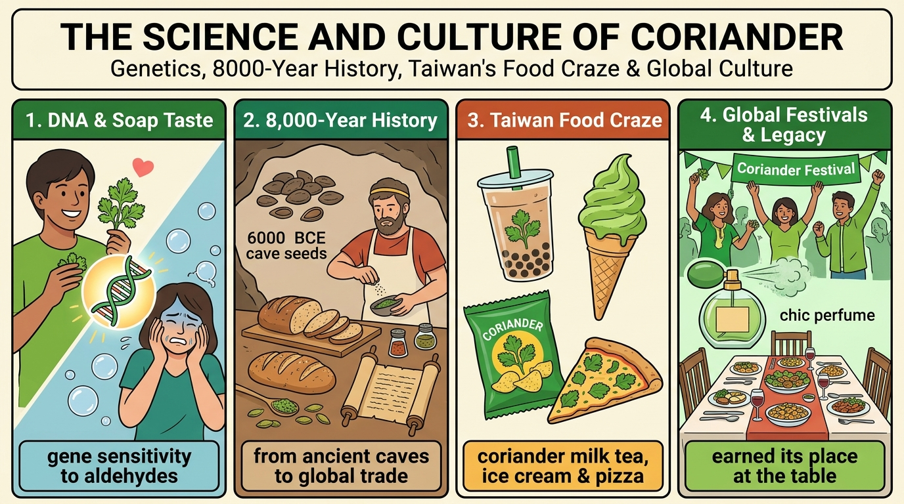

香菜風味爭議極大！有些人天生擁有特殊嗅覺受體基因，對醛類（aldehydes）極為敏感，大腦便會將香菜解讀為令人不快的肥皂味。
gene sensitivity to aldehydes已知最古老香菜種子可追溯至西元前 6000 年黎凡特洞穴！羅馬人用以調味肉類，其英文名源自希臘文的「臭蟲」，足見爭端由來已久。
8,000-year culinary journey現代飲食大膽創新，臺灣引領潮流推出香菜奶茶、洋芋片與香菜冰淇淋；日本必勝客推出香菜披薩引爆年輕世代，更以雙倍份量霸氣回歸！
milk tea, ice cream & pizza craze狂熱鐵粉舉辦香菜節狂歡，甚至推出香菜同款香水！不管你愛它或恨它，香菜早已在世界餐桌上取得一席之地，短期內絕不會改變。
earned its place at the tableflavors，前方由 hotly debated（副詞修飾過去分詞）作形容詞修飾。one of ... 後方名詞漏加 s；「備受爭議的」請用 hotly debated，切忌中式直譯 big discussed。Coriander has（主句核心主幹）Coriander 搭配及物動詞 has，順翻開門見山：『**香菜擁有……**』。
one of the ... flavors（表語最高級收攏結構）one of the + 複數名詞，中文習慣將「……的風味之一」收在整組修飾語最後方，暫時懸空。
the world’s most hotly debated（三重修飾形容詞帽子）hotly 修飾過去分詞 debated（爭論最激烈的），再由 the world’s most 加持；中文習慣修飾語戴在名詞頭上，超車移到 flavors 前面，組裝為：『**【世界上爭議最激烈的】風味之一**』。
語塊 1（香菜主體開場） ➔ 語塊 3（世界爭議最激烈超車戴帽） ➔ 語塊 2（風味之一壓軸收攏）
Coriander has flavors（香菜擁有風味）。說完了！那如何展現全世界的激烈爭議？作者在名詞 flavors 頭上戴了一頂三層大帽子：the world's（全世界的）most hotly（最火熱激烈地）debated（被大家爭論不休的）one of 挑出其中之一。名詞帽子層層套疊，乾淨俐落直接破題，這就是頂標學測作文的起手式！」
one of the + 最高級 + 複數名詞flavors 一定要加 s！且「被激烈討論的」是被動關係，用副詞 hotly 修飾過去分詞 debated。
X is one of the most hotly debated topics/foods in the world.
and 連接兩個動詞短語；介系詞片語 from many cultures 後位修飾 cuisines（料理）。from many cultures 放句尾；中文必須調序移到「料理」前方，翻譯為「許多文化的料理」。taste 是名詞「滋味、味道」（如 fresh taste），千萬別跟連綴動詞 taste like 搞混！Many people love the herb’s fresh taste（第一對等主幹）Many people 搭配及物動詞 love；the herb's fresh taste 譯為「這種香草的清新口感」，順翻為：『**許多人喜愛這種香草的清新風味**』。
and enjoy it（第二對等動詞）enjoy 在美食語境中譯為「**津津有味地品嚐**」或「**享用**」，順接為：『**並樂於在……中大快朵頤**』。
in cuisines from many cultures（後置介系詞修飾片語）from many cultures（跨越多元文化的），中文修飾語習慣戴在 cuisines 頭上，超車移到前面，組裝為：『**在【各國多元的美食料理中】盡情享用它**』。
語塊 1（喜愛清新風味開場） ➔ 語塊 3（多元文化料理超車提前） ➔ 語塊 2（享用美味壓軸）
and 只會無腦寫『S+V, and S+V』一直加句子，整篇都在重複主詞！Many people，中間放一個 and 就像天平一樣，兩邊放重量完全相等的動作砝碼：love the herb's fresh taste（喜愛這種香草的清新滋味）enjoy it in cuisines...（在各式料理中享用它）from many cultures（來自許多文化的），回頭抱住前面的 cuisines（各國料理）。一個主詞帶動兩個動作，節奏明快乾脆！」
taste 是名詞！the herb's 與形容詞 fresh 修飾，故 taste 為名詞「滋味、味道」，常以單數形出現。
coriander，第二句改用上位詞 the herb（這種香草） 代替，這是英文寫作「換字不重複」的高分技巧！
that it tastes like soap 當及物動詞 claim 的受詞，連接詞 that 口語常省略。many others 對應前句的 Many people，中英文語序完全對稱，順譯即可。tastes like soap 中 like 是介系詞，不可省略；若後面接形容詞才直接加（如 tastes delicious）。However（篇章轉折開門）many others hate it（主詞對立面與嫌惡反應）many others（許多反對者／大批厭惡者），搭配及物動詞 hate，順翻為：『**卻也有許多人對它深惡痛絕**』。
and claim it tastes like soap（指控主幹與感官譬喻）claim（堅稱、指控）；連綴 taste like soap（嚐起來如同肥皂水），順接壓軸：『**甚至【堅稱它吃起來有一股肥皂味】**』。
語塊 1（轉折開門） ➔ 語塊 2（許多人深惡痛絕） ➔ 語塊 3（堅稱如肥皂味壓軸）
hate it 與 claim，共用主詞 many others。claim（聲稱）！眼睛往它右邊看——it tastes like soap 是主詞動詞齊全的完整句子！及物動詞後面想交代一整件事情，這時候的 that 就像透明大掛鉤把整個句子掛上去當受詞，因為太常用，英文直接讓它『原地神隱蒸發』！」
taste + Adj. vs. taste like + N.soap（肥皂），連綴動詞 tastes 後面必須加上介系詞 like！
Many people...，後面用 However, many others...（切勿加 the，因為沒有把全世界的人算光）。
in fact 兩側以逗號隔開作副詞插入語。more than 翻成「不只是、超越」；lie in 翻成「在於」。中文習慣將破折號後的插入語「事實上」提至小主詞前。lie in（在於）三態為 lie – lay – lain；及物動詞「放置、產卵」才是 lay – laid – laid，千萬別寫錯！Yet this dispute is about more than personal preference（超越偏好哲理主幹）Yet（然而）；片語 more than...（不僅僅是……）；名詞 dispute（這場飲食爭論），順翻為：『**然而，這場爭議【絕非僅僅關乎個人偏好】**』。
—the reason for it（破折號懸念揭密主詞）the reason for it（背後的深層緣由），順翻為：『**——其根本原因……**』。
in fact（事實真相插入語）in fact（事實上），置於動詞前加重揭密語氣：『**事實上**』。
lies in our DNA（核心動詞片語述語）lie in... 意為「**在於／根植於**」，受詞為 our DNA，壓軸收尾：『**【就深植於我們的 DNA 基因之中】**』。
語塊 1（非僅關乎個人偏好開門） ➔ 語塊 2（破折號根本原因） ➔ 語塊 3（事實上插入） ➔ 語塊 4（深植於 DNA 壓軸揭密）
Yet，語氣比 But 更加權威典雅！很多高中生寫作文講原因只會拼命寫 because，整篇像小學生！高手都用這招：—，它就像名偵探柯南的案情放大鏡：in fact（事實上），動詞給了 lies in our DNA（在於我們的 DNA）。the reason for X lies in Yfor（不配 `of`！），「在於……」用不及物動詞片語 lie in（三態：lie–lay–lain）。
more than + N. 翻成「不只是、不僅僅是……」，比寫 `not only` 更簡潔有力！
that makes... 修飾 gene；內層 that are called... 修飾 chemicals。make + O + OC：此處 sensitive 是形容詞當受詞補語，絕不能受中文「敏感地」影響而誤寫成副詞 sensitively！Some people have a specific gene（主句生理基礎）Some people 搭配及物動詞 have 與受詞 a specific gene，暫留為「某些人帶有一種特殊的基因」。
that makes them especially sensitive to chemicals（第一重關代子句：使役與敏感度）that 修飾基因；片語 be sensitive to...（對……格外敏感），使役 make them 翻為「讓他們對某些化學物質格外敏感」。
that are called aldehydes（第二重關代子句：化學命名）that 修飾 chemicals；被動 are called aldehydes（被稱為醛類）；中文習慣將名詞定義提前戴在化學物質頭上，超車移到 chemicals 之前，組裝為：『**對【名為「醛類」的化學物質】格外敏感**』。
語塊 1（某些人帶有特殊基因開門） ➔ 語塊 3（醛類化學物質超車戴帽） ➔ 語塊 2（格外敏感使役受詞壓軸收攏）
a specific gene（特定基因）！makes（缺主詞）！代表第一個 that 是主格關代，把聚光燈打在『基因』身上，修飾這個基因會造成什麼結果。chemicals（化學物質）！are called（缺主詞）！代表第二個 that 再次打出聚光燈，專門補充說明這群化學物質叫什麼名字。make + O (them) + OC (sensitive)：使他們變得敏感。be sensitive to + N.：對……敏感（介系詞必用 to）。that are called aldehydes 可精簡為過去分詞片語 called aldehydes。
a specific gene 先寫出來，再用 that... 往後接龍！
, which are also found in soap 修飾 chemicals；主句動詞片語 process A as B（將 A 解讀為 B）。, that are also found 是大忌！逗號後指代事物必用 which。Because coriander contains these chemicals（原因副詞子句主幹）Because 引導化學成分原因，順翻為：『**正因為香菜含有這類化學物質**』。
which are also found in soap（非限定關代同質補充）which 修飾這類醛類物質；被動 are also found in soap（也常見於肥皂當中），順暢插入承接：『**【——而肥皂中恰好也含有相同的成分——】**』。
some people’s brains process the herb as unpleasant（大腦神經認知主句）some people's brains 搭配及物動詞 process A as B（將 A 解讀為 B）；形容詞 unpleasant 意為「令人反感的氣味」，順翻壓軸：『**某些人的大腦便會【自動將這種香草解讀為令人作嘔的難受氣味】**』。
語塊 1（香菜含有這類物質開門） ➔ 語塊 2（肥皂中亦有相同成分關代插入） ➔ 語塊 3（大腦自動解讀為難受氣味壓軸）
these chemicals！大考鐵則：逗號後面絕不能用 that！這裡的 which 就像拉開一個隨手補充的小抽屜（順帶一提，肥皂裡也有這成分喔），補完再把抽屜推回去，完全不影響前後主幹結構！」
, which ...these chemicals 已經有指示形容詞 these 限定了，因此後面加逗號用 , which are also found in soap, 作補充說明（此處絕對不能換成 that！）。
process A as B（後可接名詞或形容詞 unpleasant）。
who 修飾先行詞 people；grow up 後接動名詞 eating 當伴隨動作。among people who... 在英文放句尾，中文調序移到形容詞補語「少見得多」之前。less common 需用 far（遠遠更少見），大考嚴禁使用 very 修飾比較級！Interestingly（評註性副詞置首）this reaction is far less common（主句比較級核心）this reaction（這種排斥反應）；far less common（遠沒有那麼普遍／罕見得多），在大考翻譯中需先暫停，等待受詞族群超車。
among people who grew up eating coriander regularly（介系詞＋關代長修飾語）who 修飾 people；片語 grow up + V-ing 表從小養成習慣；副詞 regularly（經常、規律地）。中文習慣將族群特徵超車戴在「人們」頭上：『**在【從小就經常食用香菜長大的人群】當中**』。
語塊 1（有趣的是開門） ➔ 語塊 3（從小常吃香菜長大人群超車戴帽） ➔ 語塊 2（排斥反應極為少見壓軸評判）
people eating coriander，想寫長句時關代 who 常常動詞時態寫錯！老師教你白話秒殺拆解：people（人群）！grew up（缺主詞）！專門把聚光燈打在 people 身上，限定到底是哪一群人（從小吃香菜長大的人），絕不能用 which！」
far less + 原級 ＆ grow up + V-ingless common 是 more common 的反義（「較不常見」），前面用 far 加強語氣（「少見得多」）。grow up + V-ing（grew up eating...）。
Interestingly, / Surprisingly, / Clearly, 修飾整句話，能瞬間讓文章語氣更生動自然！
come with 為不及物動詞搭配介系詞片語。Even 翻成「甚至連……」，comes with 口語翻成「也帶有／也有」。curious 修飾人時是「感到好奇的」（如 I am curious），修飾事物時是「奇特、引人好奇的」！Even the plant’s name（強調主詞開門）Even 搭配 the plant's name，強調名稱層面，順翻為：『**甚至就連這種植物的英文名稱**』。
comes with some curious facts（動詞片語與奇聞軼事）come with... 意為「背後蘊含著／伴隨著」；形容詞 curious 在修飾事物時絕非「感到好奇的」，而是「**耐人尋味的／奇特有趣的**」（strange/unusual），組裝壓軸：『**【也蘊含著幾則令人意想不到的奇聞軼事】**』。
語塊 1（植物名稱強調開門） ➔ 語塊 2（蘊含奇聞軼事壓軸）
Even 就能帶出遞進層次！Even，像在音響上重重推了一格重音（『甚至連……都』），加碼推高讀者好奇心！comes with 就像買手機隨機附贈配件一樣，後面掛上 some curious facts 當受詞，結構緊湊精準！」
come with + N. 伴隨著；附帶……curious 除了指「人感到好奇的（be curious about）」，放在事物前面（curious facts）意思是「奇特的、耐人尋味的、有趣的」！
while 連接兩個對稱並列子句，形成美式英語內部對「葉」與「種子」的鮮明對稱。while 轉折翻成「而」，後半交代種子稱呼。while 三大考法：① 對比（而）；② 時間（當……之時）；③ 讓步（雖然）。本句為典型對比用法！In American English（地域語系範圍片語）the leaves are called cilantro（天平第一端：葉片稱呼）are called，順翻為：『**香菜的葉子被稱為 cilantro**』。
while the seeds are called coriander（對比從屬連接詞天平第二端）while 表強烈對照（而、反之），絕非當……時！順接壓軸：『**【而其種子則被稱作 coriander】**』。
語塊 1（美式英文開門） ➔ 語塊 2（葉子稱為 cilantro） ➔ 語塊 3（while 對比種子稱 coriander 壓軸）
while 永遠只能翻成『當……的時候』，看到這裡兩邊完全對稱的結構直接大翻車！the leaves are called cilantro（葉子叫 cilantro）the seeds are called coriander（種子叫 coriander）, while ...while（= whereas）。
A is called B，千萬別多加 `as`（❌ `is called as B` 是常見錯誤；`be known as B` 才有 `as`）。
such as 引導名詞片語舉例；simply 為修飾動詞的副詞，表「僅僅、直接了當地」。both parts（兩個部位：葉與籽），動詞必須用複數 are！In places such as the UK and Australia（地域舉例片語）such as 舉例英國與澳洲，中文習慣先舉例再收攏地域：『**但在英國與澳洲等地區**』。
both parts（核心主詞）are simply called coriander（被動述語與一律統稱）simply 意為「純粹、一律統稱」，被動 are called，順翻壓軸：『**【則一律統稱為 coriander】**』。
語塊 1（英澳地域舉例開場） ➔ 語塊 2（兩部位主詞） ➔ 語塊 3（一律統稱壓軸）
For example, UK and Australia... 句子斷得稀碎！高手都用這招：both parts are simply called coriander（兩個部位都統稱為 coriander）。那地點怎麼交代？直接在句首背上外掛小背包：In places（在某些地方）such as the UK and Australia（例如英國與澳洲）the UK vs. Australiathe（the UK, the US）；單一專有名詞則不加冠詞（Australia, Taiwan, Japan）。
simply 放在 be 動詞與 p.p. 中間（are simply called），翻成「就只是、直接地」。
comes from（字源是永恆知識）；副詞子句用過去式 thought, smelled（古希臘人的歷史思想）。thought 的受詞；smell like + N. 為核心連綴句型。comes；但描述古希臘人（the ancient Greeks）必須用過去式 thought / smelled！The word coriander comes from a Greek word（詞源考據主幹）The word coriander 搭配片語 come from，順翻為：『**coriander 這個字其實源自希臘文……**』。
for stink bug（介系詞指涉物）for 表對應字義，名詞 stink bug（椿象／臭蟲），組裝為：『**源自古希臘語中【代表「椿象（臭蟲）」的單字】**』。
because the ancient Greeks thought（原因副詞子句主幹）because 引導古人觀點，順翻為：『**因為古希臘人認為……**』。
fresh coriander smelled like one（感官氣味子句）smell like + 名詞；代名詞 one 代指椿象，順翻壓軸：『**新鮮香菜的氣味【聞起來就像臭蟲一樣】**』。
語塊 1（詞源主幹開場） ➔ 語塊 2（臭蟲字義指涉） ➔ 語塊 3（古希臘人原因） ➔ 語塊 4（聞起來像臭蟲壓軸）
thought 後面為什麼沒有連接詞？因為名詞子句 that 當受詞又被隱形了！thought（認為）！fresh coriander smelled like one 是主詞動詞齊全的完整句子！這裡的 that 又是透明大掛鉤，英文講求語速，再次原地神隱！」
one 指代什麼？smelled like one 等於 smelled like a stink bug！用不定代名詞 one 代替前面出現過的單數可數名詞「一隻臭蟲」。
for：a Greek word for “stink bug”。
nothing 由形容詞 new 進行後位修飾；debate over + N. 介系詞搭配 over。nothing new 英文正話反說，中文直譯「不是新事物」，口語潤飾為「一點也不新鮮！」。debate over / on / about，切忌寫成 debate with（與人辯論）。Clearly（態勢明朗評註副詞）the debate over this herb（核心名詞片語主詞）over 表針對……；this herb（這種香草），順翻為：『**世人圍繞著這種香草的論戰……**』。
is nothing new!（大考高頻否定句型）be nothing new 意為「**絕非始於今日／早已有跡可循**」，順接壓軸：『**【早已有著千百年的歷史，絕非始於今日】！**』。
語塊 1（顯而易見開門） ➔ 語塊 2（香草論戰主體） ➔ 語塊 3（絕非始於今日壓軸感嘆）
It is not new. 這句用 nothing new 展現頂標高階簡潔感！Clearly 是一字定調的情態副詞（『顯而易見的是』）。the debate over this herb，介系詞片語 over... 像外掛小包包一樣修飾 debate。new 放在不定代名詞 nothing 後面作後位修飾（nothing new），簡潔有力直接破表！」
the debate over/on/about + N.debate 後接介系詞 over / on / about。nothing, something, anything）形容詞一律放後面：nothing new。
X is nothing new! 超級道地！
stretch back 帶時間名詞片語當副詞用；副詞 also 銜接前段。stretch back / date back / trace back 均用主動語態！Coriander’s story（故事主詞開門）Coriander’s story，順翻為：『**香菜的歷史身世**』。
also stretches back thousands of years（時間回溯動詞片語）stretch back... 意為「**一路回溯／源遠流長跨越……**」，受詞 thousands of years（數千年），順翻壓軸：『**同樣【可一路回溯至數千年前】**』。
語塊 1（香菜歷史開門） ➔ 語塊 2（一路回溯數千年壓軸）
stretch back 生動勾勒出時間像橡皮筋一樣拉長數千年！Coriander’s story stretches back（香菜的故事往回延伸）。also 像轉場膠水一樣串聯前一段的名稱冷知識；屁股後面掛上時間長度 thousands of years（數千年之久），主幹乾淨有力！」
stretch back + 時間段 延續／追溯了多久thousands of years 數千年）」，所以不用加 to；若接「過去某時間點（6000 BCE）」才要加 to。
of：thousands of years。
The oldest known 為最高級複合形容詞；Levant 為地中海東部黎凡特古區。date back to + 時間 絕不可加 been 或寫成被動；介系詞固定搭配 to！The oldest known coriander seeds（考古主詞）oldest known（已知最古老的），修飾種子，順翻為：『**目前已知最古老的香菜種子……**』。
were found in caves in the Levant（被動發現與地點）in caves in the Levant（黎凡特地區的洞穴中）；中文習慣地點在動作前，超車移到 were found 之前：『**是在【黎凡特地區的洞穴中】被挖掘出土**』。
and date back to roughly 6000 BCE（年代測定動詞片語）date back to（追溯至）；副詞 roughly（大約、約莫），年代 6000 BCE（西元前 6000 年），順接壓軸：『**【其歷史可追溯至大約西元前 6000 年】**』。
語塊 1（最古老種子主體） ➔ 語塊 2（黎凡特洞穴地點超車＋被挖掘出土） ➔ 語塊 3（追溯至西元前六千年壓軸）
and 的天平作用：were found in caves in the Levant（在黎凡特洞穴中被發現，被動語態）date back to roughly 6000 BCE（可追溯至約西元前 6000 年，主動表被動）The oldest known coriander seeds！」
date back to 永遠用「現在簡單式・主動」！were found（當年被發現），但第二個動詞卻是現在主動 date back to！因為「古物從現在往回推算到某年代」是客觀事實，絕不可寫被動 `are dated back to`！
the oldest known + N.，精簡又專業。
to flavor ... and (to) preserve 為平行不定詞；子句2為標準過去完成式獨立主句。spread 的過去分詞依然是 spread（三態 spread – spread – spread）；看到 by the Middle Ages 絕不能只填 spread，必須填 had spread！The Romans used them（羅馬人主幹動作）The Romans 搭配 used them，順翻為：『**羅馬人曾用香菜……**』。
to flavor bread and preserve meat（並列目的不定詞）flavor（增添風味／調味）；preserve meat（醃漬保存肉品），順接為：『**來【為麵包調味並保存肉類】**』。
and by the Middle Ages（時間截止介系詞片語）by + 過去時間 搭配過去完成式，意為「到了中世紀之時」，順翻為：『**而到了中世紀之際**』。
the plants had spread across Europe（過去完成式擴散成果）had spread across... 表動作已遍及全境，順翻壓軸：『**這種植物【早已傳遍整個歐洲大陸】**』。
語塊 1（羅馬人開門） ➔ 語塊 2（調味麵包與保存肉品目的） ➔ 語塊 3（中世紀時間） ➔ 語塊 4（早已傳遍歐洲壓軸）
flavor bread 與 preserve meat，共用前方的 to！by the Middle Ages, the plants had spread...）！代表它跨越了歷史時代，把『羅馬時代』與『中世紀』無縫串接！」
by + 過去時間點 $\rightarrow$ 過去完成式 had + p.p.by the Middle Ages（到了中世紀這過去時間點為止），後面一定要用過去完成式 had spread（注意 spread 三態同形：spread–spread–spread）。
flavor 是及物動詞「給……調味」（flavor bread 替麵包調味），一字多詞性超常考！
until 連接時間副詞子句；find a home in 為比喻性固定搭配。found a home 切忌死板直譯「找到一個家」，在農藝與飲食文化中翻成「落地生根、確立地位」更顯名校水準。From there（空間起點承接）explorers carried the herb to new lands（航海探險主幹）explorers（探險家）；動詞片語 carry ... to new lands（將香草帶往新大陸／未知遠方），順翻為：『**探險家們將這種香草帶到了世界各地的新大陸**』。
until it found a home in Central American and Asian cuisines（直到落地生根從屬子句）find a home in... 為生動隱喻，意為「**在……落地生根／成為不可或缺的食材**」，受詞為中美洲與亞洲料理，順翻壓軸：『**直到它【在中美洲與亞洲的傳統料理中徹底落地生根】**』。
語塊 1（自歐洲出發） ➔ 語塊 2（探險家帶往新大陸） ➔ 語塊 3（在中美與亞洲料理落地生根壓軸）
until 只會死背『直到……才』，結果翻出來句子卡死！explorers carried the herb to new lands 交代探險家的長途航行；until 就像接力賽跑的終點線，一路護送到最後目的地！find a home 就像流浪者終於找到了家，生動形容香菜在新大陸『落地生根』，節奏明快！」
find a home in ...carry A to B（把 A 攜帶／傳播到 B），搭配 until... 描寫歷史傳播軌跡非常有畫面感。
and 連接兩個完整的 S+V+O 獨立子句。lead the way 中的 the 不可省略，也不可寫成 lead a way 或 lead way。Today（當今時間定位）food companies are creating unusual coriander products（食品業創新浪潮）are creating 表當前風潮；形容詞 unusual（別出心裁的／前所未見的），順翻為：『**各大食品業者正紛紛推出【各式別出心裁的香菜創新商品】**』。
and Taiwan is leading the way（對等領航主句）lead the way 意為「**領航潮流／走在最前端／獨領風騷**」，順翻壓軸：『**【而台灣更在其中獨領風騷、引領風潮】！**』。
語塊 1（時至今日開門） ➔ 語塊 2（食品公司創新商品） ➔ 語塊 3（台灣獨領風騷引領風潮壓軸）
Taiwan is good. 這句用 Taiwan is leading the way 是大考滿分片語！and 的轉場魔法：and 像攝影師推動鏡頭，把全球鏡頭一下子轉移到我們身邊，將大大的聚光燈打在台灣身上，節奏感極佳！」
are creating / is leading 表「當代正在發生的趨勢」Today，改用現在進行式展現這股熱潮「此時此刻正在持續發燒」。
Taiwan is leading the way (in ...).
can。親切導覽生活中的特色美食。coriander-flavored 為「名詞 + 過去分詞」複合形容詞修飾 potato chips。flavored 是加了特定風味的（如 chocolate-flavored）；flavorful 則是形容食物本身「美味、充滿風味的」。You can find（泛指受眾大眾化陳述）You can find... 靈活轉譯為「**市面上隨處可見……**」或「**你可以在這裡嚐到……**」，順暢開場。
coriander milk tea, coriander-flavored potato chips（創意商品清單一與二）coriander milk tea（香菜奶茶）與 coriander-flavored potato chips（香菜風味洋芋片），順翻交代。
and even coriander ice cream（極致跨界商品壓軸）even 加強語氣，搭配 coriander ice cream（香菜冰淇淋），順接壓軸：『**甚至連【香菜冰淇淋】都能在市面上見到**』。
語塊 1（市面上隨處可見開門） ➔ 語塊 2（香菜奶茶、洋芋片） ➔ 語塊 3（甚至香菜冰淇淋壓軸驚艷）
A, B, and C，加上 even 直接把讀者的驚訝感拉到最高點！coriander milk tea（香菜奶茶，好像還能想像）coriander-flavored potato chips（香菜洋芋片，開始有點奇特）and even coriander ice cream（甚至連香菜冰淇淋都來了！）even 步步高升，一口氣引爆讀者驚奇！」
N.-flavored（……口味的）-flavored，就能造出任何口味的形容詞：coriander-flavored（香菜口味的）、strawberry-flavored（草莓口味的）。
, and even C（甚至還有 C），能製造強烈的語氣高潮！
that 修飾 pizza；內層 such a hit that... 為結果副詞子句；句尾帶倍數介系詞片語 with twice the amount of the herb。twice the amount of（可數用 twice the number of）；a hit 是可數名詞（暢銷事物），前面必須用 such 絕不能用 so！In Japan, Pizza Hut released a coriander pizza（主句發售主幹）released 翻「強勢推出」，順翻為：『**在日本，必勝客曾推出一款「香菜披薩」**』。
that became such a hit with younger customers（關代引導 such...that... 轟動迴響）such a hit with sb 意為「在……族群中引發巨大轟動／大受……歡迎」，順翻為：『**在年輕消費者之間【引爆超高人氣與搶購狂潮】**』。
that the chain brought it back（連鎖業者重磅回歸）that 引出因應；bring it back 意為「重磅復刻回歸」，順接為：『**以至於該連鎖品牌隨後再度推出復刻版**』。
with twice the amount of the herb（份量加倍介系詞片語）twice the amount of...（兩倍份量）；中文習慣置於復刻回歸動作前，組裝為：『**【更直接豪邁放上雙倍份量的香菜】強勢回歸**』。
語塊 1（日本必勝客推出香菜披薩開門） ➔ 語塊 2（年輕人中引爆人氣狂潮） ➔ 語塊 4（雙倍份量超車提前） ➔ 語塊 3（品牌重磅復刻回歸壓軸）
a coriander pizza（香菜披薩）！became（缺主詞）！專門修飾這款披薩造成了什麼轟動。such a hit（如此巨大的成功，hit 是名詞，所以用 such 不用 so！）such a hit ... that + S + V：因為 a hit（熱賣商品）是單數可數名詞，前面必用 such（不可用 `so`！）。twice the amount of + 不可數名詞：倍數放最前面，再接 the + 計量詞 (amount) + of。
with：become a big hit with younger customers。
to celebrate 表目的；子句2關代 that 限定修飾 perfumes。there are perfumes that smell：先行詞是複數 perfumes，關代子句動詞必須用原形 smell（不可寫成 smells）！Devoted fans even hold special festivals（狂熱粉絲慶祝盛典）Devoted（死忠狂熱的）；動詞 hold special festivals（舉辦專屬慶典），順翻為：『**死忠的香菜迷甚至會為它【舉辦專屬的慶祝節日】**』。
to celebrate the herb（目的不定詞）and there are now perfumes（跨界香氛存在句）that smell just like fresh coriander（關係代名詞形容詞子句）that 修飾 perfumes；片語 smell just like...（聞起來宛如……），中文修飾語習慣戴在香水頭上，超車移到 perfumes 之前，組裝為：『**【聞起來宛如新鮮香菜氣味的】特調香水**』。
語塊 1（死忠粉絲舉辦慶典開場） ➔ 語塊 2（歌頌香草目的） ➔ 語塊 4（宛如新鮮香菜氣味超車戴帽） ➔ 語塊 3（專屬香水壓軸登場）
There are perfumes smell... 漏掉關代 that 直接文法錯誤扣大分！perfumes（香水）！smell（缺主詞）！專門修飾這種香水到底散發什麼氣味，絕不能省略 that！」
taste / smell / look / sound / feel + like + N.tastes like soap（嚐起來像肥皂）與 smelled like one（聞起來像臭蟲），這句再出現 smell just like fresh coriander（聞起來就像新鮮香菜）！
hold（三態：hold–held–held），「死忠粉絲」用 devoted fans。
Love it or hate it 為讓步狀語；that 指代前句「香菜確立的地位」；and 連接兩個獨立主句。earn one's place at the table 指「確立地位、取得話語權」；anytime soon 必須用於否定句，表示「近期內不會」。Love it or hate it（祈使讓步成語開場）Whether you love it or hate it 省略 Whether 的祈使讓步結構，翻為：『**【無論你喜愛還是厭惡它】**』。
coriander has clearly earned its place at the table（贏得餐桌一席之地主幹）earn one's place at the table 意為「**在餐桌上奠定不可動搖的一席之地**」，副詞 clearly 凸顯毫無爭議，順翻為：『**香菜顯然已在世界餐桌上【贏得了一席之地】**』。
and by the looks of it（評判觀察成語片語）by the looks of it 意為「**照目前的態勢來看／依現況而論**」，順翻承接：『**而且從目前情勢看來**』。
that isn’t changing anytime soon（未來地位難以動搖）that 指代香菜的地位；片語 anytime soon 搭配否定句表「短時間內絕不會改變」，組裝壓軸：『**【這股熱潮在短時間內絕不會有任何改變】**』。
語塊 1（無論喜愛還是討厭開門） ➔ 語塊 2（餐桌一席之地地位確立） ➔ 語塊 3（依現況看來） ➔ 語塊 4（短時間內絕不動搖壓軸總結）
Although some like it and some hate it，高手直接四個字秒殺：Whether you love it or hate it 的高級簡化版，省略連詞主詞，直接用兩個反義動詞原形開門（『不論你愛它還是恨它』），氣勢震撼直接破表！Love it or hate it = Whether you love it or hate it（無論你喜歡或討厭它）。earn one's place：贏得一席之地。by the looks of it：照目前的情況看來。
Love it or hate it, X has clearly earned its place in modern life.
taste 的雙重身分（名詞 vs. 連綴動詞）課文同時出現 fresh taste 與 tastes like soap，到底怎麼分？
• I love the sweet taste of fresh fruit in the summer.
• The fried noodles my cousin made taste so delicious.
• Adam said the cream in the cake tastes like mangoes.
taste 表示「嚐起來……」時，不可用進行式 `is tasting`，也不可接副詞 `deliciously`！
while 的三種面貌看「位置」與「前後句關係」，1 秒判斷 while 的中文意思！
| 位置與結構 | 中文語意 | 課本經典例句 |
|---|---|---|
句中逗號後S1+V1, while S2+V2 |
① 而、然而 （前後對比反差） |
Cats are often independent, while dogs can be more social. |
句中或句首while + 進行式動作 |
② 當……之時 （時間同時發生） |
We took photos while we were walking around the park. |
句首While S1+V1, S2+V2 |
③ 雖然、儘管 （= although 讓步） |
While the task was difficult, everyone completed it. |
such ... that vs. so ... that 秒殺判別法看 that 前面的「核心字詞性」決定用 such 還是 so！
• It was such a cold day that we chose to stay inside.
• ...became such a hit with younger customers that the chain brought it back.
• This cafe has such great coffee that I ordered a second cup.（coffee 不可數，絕不可加 `a`！）
記住口訣：「倍數永遠衝第一！」三種句型自由轉換：
twice 只能配句型 1（twice the size of）與句型 2（twice as large as），避免寫 ❌ twice larger than！若要用 larger than，請改寫成 ✅ two times larger than。
debated adj. 有爭議的）de-（往下）+ bat（打擊、球棒）$\rightarrow$ 雙方言語交鋒過招 = 辯論！
hotly debated（爭論最激烈的）a debate over / on / about + N.（關於……的辯論）
flavored [ˋflevɚd] adj.flavor bread（v. 替麵包調味）coriander-flavored chips（adj. 香菜口味的洋芋片）
rich / unique / strong flavor（濃郁／獨特／強烈的風味）artificial flavors（人工香料）
spec-（看、種類，同 special 特別的、species 物種）$\rightarrow$ 看準某一個特定目標 = 特定的、明確的！
a specific gene / reason（特定的基因／理由）be specific to + 某地/某人（為……所特有）
pro-（往前）+ cess（走）$\rightarrow$ 一步步往前走完程序 = 過程 (n.)；處理、加工 (v.)。
process the herb as unpleasant（將香草解讀為令人不快）processed food（加工食品 — 學測超高頻！）
re-（反、回）+ act（行動）+ -ion（名詞）$\rightarrow$ 對刺激做出的回應動作 = 反應！
a reaction to + N.（對……的反應，介系詞配 to！）an allergic reaction（過敏反應）
stretch，時間軸往過去拉長好幾千年就是 stretch back（追溯、延續）！
stretch back thousands of years（追溯數千年）stretch one's legs / arms（伸展雙腿／雙臂）
spread – spread – spreadspread across Europe / the world（傳遍歐洲／全球）prevent the spread of disease（防止疾病蔓延）
produce (v. 生產 / n. [U] 農產品)product (n. [C] 工廠製造的產品)production (n. [U] 生產、製造過程)
unusual coriander products（新奇的香菜產品）dairy products（乳製品）
release a new product / movie / album（推出新產品／電影／專輯）release stress / greenhouse gases（釋放壓力／排放溫室氣體）
chain，一家接一家開的分店就是「連鎖店（chain store / fast-food chain）」！
a fast-food / hotel chain（速食／飯店連鎖企業）food chain（食物鏈）｜supply chain（供應鏈）
| 單字與音標 | 詞性與中義 |
|---|---|
cuisine [kwɪˋzin] | n. 料理、菜系；烹飪 |
dispute [dɪˋspjut] | n./v. 爭論；爭議 |
preference [ˋprɛfərəns] | n. 偏好、喜好（prefer v.） |
gene [dʒin] | n. 基因（genetic adj.） |
preserve [prɪˋzɝv] | v. 保存；防腐；維護 |
explorer [ɪkˋsplɔrɚ] | n. 探險家（explore v.） |
devoted [dɪˋvotɪd] | adj. 忠實的、摯愛的 |
perfume [ˋpɝfjum] | n. 香水 |
| 英文片語 | 中文意思與考點 |
|---|---|
| lie in + N. | 在於……（三態 lie-lay-lain） |
| be sensitive to + N. | 對……敏感（to 為介系詞） |
| date back to + 年代 | 追溯至……（必用現在主動！） |
| lead the way | 領先、帶頭、引領潮流 |
| earn one's place | 取得一席之地、確立地位 |
| by the looks of it | 照目前看來；從現況判斷 |
1. 請選出最適合填入 (__1__) 的詞彙：
taste 後方若接名詞 soap（肥皂），必須加介系詞 like（嚐起來像……），且連綴動詞不可用被動語態。2. 請選出最適合填入 (__2__) 的片語：
the reason for X lies in Y 表「X 的原因在於 Y」。注意 lays 是及物動詞「放置、下蛋」，不可與不及物動詞 lies 混淆。3. 請選出最適合填入 (__3__) 的動詞形式：
6000 BCE，必須有介系詞 to，且 date back to 一律使用「現在簡單式・主動語態」。(D) 少了介系詞 to。4. 請選出最適合填入 (__4__) 的時態：
by the Middle Ages（到了中世紀這個過去時間點為止），主句必須用過去完成式 had + p.p.，且 spread 三態同形，沒有 spreaded。5. 請選出最適合填入 (__5__) 的結構：
hit 在此為可數名詞「風靡一時的熱賣商品」，搭配結果子句 that... 時，須使用 such + a/an + 單數可數名詞 + that。6. Before the invention of refrigerators, people used salt and herbs like coriander to ________ meat and keep it from going bad.
7. Everyone had a different ________ when the company announced that it would launch coriander-flavored ice cream next month.
8. The famous tech company plans to ________ its latest AI-powered laptop to the global market this Friday.
release a new product 表示向市場「推出、發行」新產品。9. People who carry a ________ gene are extremely sensitive to aldehydes, so even a tiny leaf of cilantro tastes terrible to them.
10. The new stadium built for the international games is ________ the old one in our town.
倍數 (twice) + the + 計量詞 (size) + of + N.。注意 (A) 課本特別提醒 twice 避免搭配 比較級 + than；(D) as ... as 中間須放原級 large。11. In American English, the leaves of the plant are called cilantro, ________ the seeds are referred to as coriander.
while。(A)(C) 為介系詞不可接子句。12. 【中翻英除錯】「這家咖啡廳的咖啡太好喝了，以致於我又點了第二杯。」哪一句英文完全正確？
coffee 是不可數名詞，搭配 such + Adj. + 不可數名詞 + that + S + V，前面絕對不能加冠詞 a，也不能用 so！13. (原課文測驗題) Which of the following statements is TRUE according to of the article?
14. (原課文測驗題) Which event happened FIRST according to of the passage?
15. (原課文測驗題) What is the main idea of the second paragraph of (Paragraph 5)?